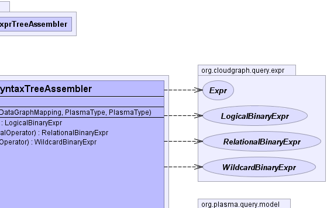
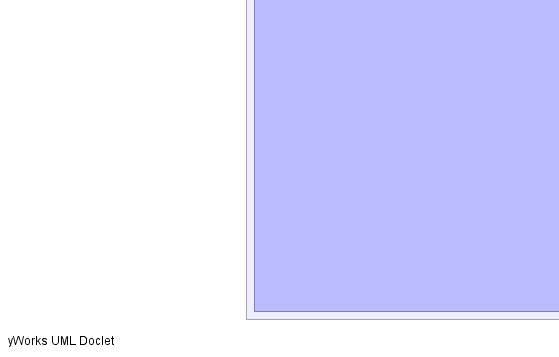
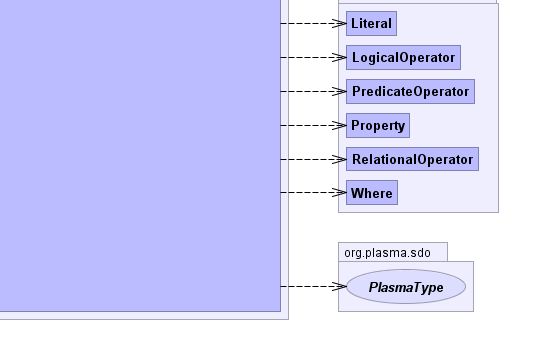

- java.lang.Object
-
- org.plasma.query.visitor.DefaultQueryVisitor
-
- org.cloudgraph.query.expr.ExpresionVisitorSupport
-
- org.cloudgraph.query.expr.DefaultBinaryExprTreeAssembler
-
- org.cloudgraph.hbase.expr.PathPredicateBinaryExprTreeAssembler
-
- org.cloudgraph.hbase.graph.LocalEdgeRecognizerSyntaxTreeAssembler
-
- All Implemented Interfaces:
- ExprAssembler, org.plasma.query.visitor.QueryVisitor
public class LocalEdgeRecognizerSyntaxTreeAssembler extends PathPredicateBinaryExprTreeAssembler
A binary expression tree assembler which constructs an operator precedence map, thenvisits(traverses) the given predicate expression syntax tree depth-first using an adapted shunting-yard algorithm and assembles a resulting binary tree structure. In typical usage scenarios, a single expression tree is assembled once, and then used to evaluate any number of graph edge or other results based on a given context.The adapted shunting-yard algorithm in general uses a stack of operators and operands, and as new binary tree nodes are detected and created they are pushed onto the operand stack based on operator precedence. The resulting binary expression tree reflects the syntax of the underlying query expression including the precedence of its operators.
The use of binary expression tree evaluation for post processing of graph edge results is necessary in columnar data stores, as an entity with multiple properties is necessarily persisted across multiple columns. And while these data stores provide many useful column oriented filters, the capability to select an entity based on complex criteria which spans several columns is generally not supported, as such filters are column oriented. Yet even for simple queries (e.g. "where entity.c1 = 'foo' and entity.c2 = 'bar'") column c1 and its value exists in one cell and column c2 exists in another table cell. Since columnar data store filters cannot generally span columns, both cells must be returned and the results post processed within the context of the binary expression tree.
- Since:
- 0.5.2
- Author:
- Scott Cinnamond
- See Also:
LocalEdgeRecognizerRelationalBinaryExpr,LocalEdgeRecognizerWildcardBinaryExpr,ExprAssembler-

  
-
-
Field Summary
Fields Modifier and Type Field and Description protected DataGraphMappinggraphConfig-
Fields inherited from class org.cloudgraph.hbase.expr.PathPredicateBinaryExprTreeAssembler
columnKeyFactory, edgeType
-
Fields inherited from class org.cloudgraph.query.expr.DefaultBinaryExprTreeAssembler
contextExpression, contextProperty, contextQueryProperty, contextType, predicate, rootType
-
-
Constructor Summary
Constructors Constructor and Description LocalEdgeRecognizerSyntaxTreeAssembler(org.plasma.query.model.Where predicate, DataGraphMapping graphConfig, org.plasma.sdo.PlasmaType edgeType, org.plasma.sdo.PlasmaType rootType)Constructs an assembler based on the given predicate and graph edge type.
-
Method Summary
Methods Modifier and Type Method and Description LogicalBinaryExprcreateLogicalBinaryExpr(Expr left, Expr right, org.plasma.query.model.LogicalOperator operator)Creates and returns a logical binary expression based on the given terms and logical operator.RelationalBinaryExprcreateRelationalBinaryExpr(org.plasma.query.model.Property property, org.plasma.query.model.Literal literal, org.plasma.query.model.RelationalOperator operator)Creates and returns a relational binary expression based on the given terms and relational operator.WildcardBinaryExprcreateWildcardBinaryExpr(org.plasma.query.model.Property property, org.plasma.query.model.Literal literal, org.plasma.query.model.PredicateOperator operator)Creates and returns a wildcard binary expression based on the given terms and wildcard operator.-
Methods inherited from class org.cloudgraph.hbase.expr.PathPredicateBinaryExprTreeAssembler
end
-
Methods inherited from class org.cloudgraph.query.expr.DefaultBinaryExprTreeAssembler
end, getResult, log, serialize, traverse
-
Methods inherited from class org.cloudgraph.query.expr.ExpresionVisitorSupport
getChildExpressionCount, getChildExpressions, getLogicalOperatorCount, hasChildExpressions, hasWildcard
-
Methods inherited from class org.plasma.query.visitor.DefaultQueryVisitor
end, end, end, end, end, end, end, end, end, end, end, end, end, end, end, end, end, end, end, end, end, end, getContext, start, start, start, start, start, start, start, start, start, start, start, start, start, start, start, start, start, start, start, start, start, start, start, start
-
-
-
-
Field Detail
-
graphConfig
protected DataGraphMapping graphConfig
-
-
Constructor Detail
-
LocalEdgeRecognizerSyntaxTreeAssembler
public LocalEdgeRecognizerSyntaxTreeAssembler(org.plasma.query.model.Where predicate, DataGraphMapping graphConfig, org.plasma.sdo.PlasmaType edgeType, org.plasma.sdo.PlasmaType rootType)Constructs an assembler based on the given predicate and graph edge type.- Parameters:
predicate- the predicateedgeType- the graph edge type which is the type for the reference property within the graph which represents an edgerootType- the graph root typegraphConfig- the graph config
-
-
Method Detail
-
createRelationalBinaryExpr
public RelationalBinaryExpr createRelationalBinaryExpr(org.plasma.query.model.Property property, org.plasma.query.model.Literal literal, org.plasma.query.model.RelationalOperator operator)
Description copied from class:DefaultBinaryExprTreeAssemblerCreates and returns a relational binary expression based on the given terms and relational operator.- Specified by:
createRelationalBinaryExprin interfaceExprAssembler- Overrides:
createRelationalBinaryExprin classDefaultBinaryExprTreeAssembler- Parameters:
property- the property termliteral- the literal termoperator- the relational operator- Returns:
- a relational binary expression based on the given terms and relational operator.
-
createWildcardBinaryExpr
public WildcardBinaryExpr createWildcardBinaryExpr(org.plasma.query.model.Property property, org.plasma.query.model.Literal literal, org.plasma.query.model.PredicateOperator operator)
Description copied from class:DefaultBinaryExprTreeAssemblerCreates and returns a wildcard binary expression based on the given terms and wildcard operator.- Specified by:
createWildcardBinaryExprin interfaceExprAssembler- Overrides:
createWildcardBinaryExprin classDefaultBinaryExprTreeAssembler- Parameters:
property- the property termliteral- the literal termoperator- the wildcard operator- Returns:
- a wildcard binary expression based on the given terms and wildcard operator.
-
createLogicalBinaryExpr
public LogicalBinaryExpr createLogicalBinaryExpr(Expr left, Expr right, org.plasma.query.model.LogicalOperator operator)
Description copied from class:DefaultBinaryExprTreeAssemblerCreates and returns a logical binary expression based on the given terms and logical operator.- Specified by:
createLogicalBinaryExprin interfaceExprAssembler- Overrides:
createLogicalBinaryExprin classDefaultBinaryExprTreeAssembleroperator- the logical operator- Returns:
- a wildcard binary expression based on the given terms and logical operator.
-
-